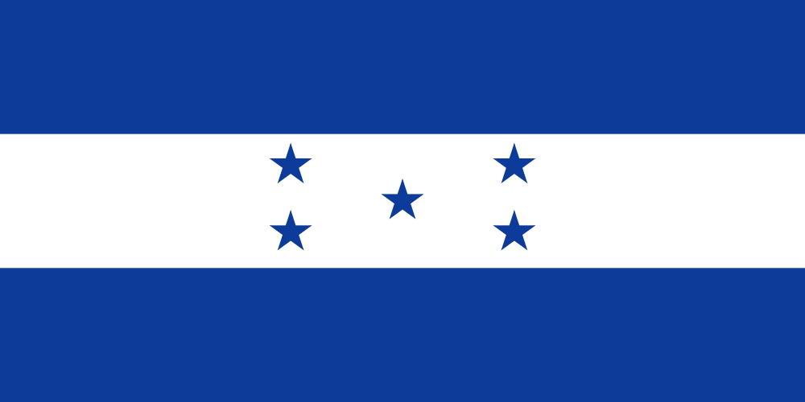

Centro America
Honduras
- 
La historia de Honduras, país ubicado en el centro de América Central, se remonta a unos 14 000 años (conforme al consenso de Clovis), en que se estima ocurrieron los primeros asentamientos de pobladores sedentarios. Resalta en la historia geológica de Honduras el hecho de poseer el único reporte de fósiles de dinosaurios de América Central. Antes de la conquista por los españoles en el siglo XVI, lo que ahora es Honduras fue habitado por pueblos de culturas que interactuaron entre ellos en diverso grado, en el tiempo y el territorio. De aquella época sobresalen la cultura olmeca, la tolteca y la maya. El 15 de septiembre de 1821 se firma el Acta de Independencia de Centro América respecto a México que se proclama en 1823, es en 1838 cuando Honduras se independiza de Centroamérica y se inicia el proceso de integración definitivo que da lugar a la Honduras contemporánea.1